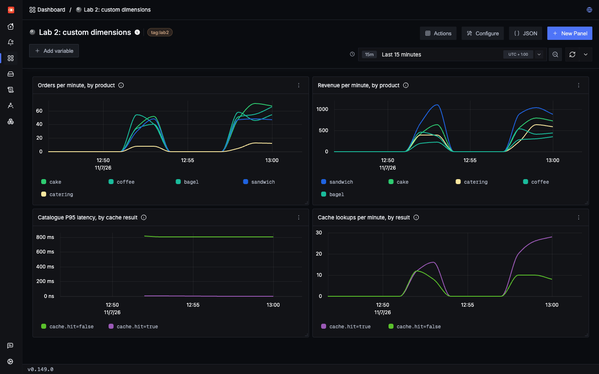

Lab 2: custom dimensions
Dimensions and granularity
A dimension is anything you can filter or group by. Each one lets you ask a sharper question. Some come for free, and some only your code knows. The skill is choosing where each one belongs.
Two kinds of dimension
| Examples | The question it answers | |
|---|---|---|
| Free, from Lab 1 | service.name, route, status code, k8s.pod.name, k8s.node.name | Which service, endpoint or pod is slow? |
| Technical, needs your code | cache.hit, orders.returned | Is it slow only on cache misses, or only with big results? |
| Business, needs your code | order.item, order.coupon | Is it only one product, and what does it cost us? |
Three steps, from cheapest to richest
You keep Lab 1's setup and take only the steps you need. You never have to instrument everything.
| Step | What you write | What you gain | What it can't do |
|---|---|---|---|
| 1. Log field | log.info("order stored", extra={"order.item": item}) | Search, count, sum and chart it, with no OpenTelemetry code | Connect it to latency, because the duration is on the span |
| 2. Span attribute | trace.get_current_span().set_attribute("cache.hit", hit) | Filter and group traces by it, including latency | Stay complete if you ever sample traces |
| 3. Metric label | cache_lookups.add(1, {"cache.hit": hit}) | Cheap totals and trends over time, however many requests you have | Hold values with no fixed limit |
Where each value belongs
| Kind of value | Example | Log field | Span attribute | Metric label |
|---|---|---|---|---|
| A few possible values | order.item, cache.hit | Yes | Yes | Yes |
| No fixed limit | order.id, a customer ID | Yes | Yes | No |
What a bad metric label costs
We sent the same 1,000 orders as two metrics, and changed only the label. These numbers come from this lab ClickHouse SQL:
| Label | Distinct values | Series | Samples stored in about a minute |
|---|---|---|---|
order.item | 5 | 5 | 65 |
order.id | 1,000 | 1,000 | 13,000 |
Every distinct label value creates a new series, and each series keeps costing storage. An order ID is fine on a span, where it costs one value on one request. As a metric label it grows forever.
See it in SigNoz
make lab2 creates a dashboard called Lab 2: custom dimensions. Run cache_miss, slow_item and free_orders in Lab 2 a few times with the load generator on, then open it from Dashboards in SigNoz.
The cache panel shows why this matters. In one run, P95 latency for GET /catalog was 4 ms on a hit and 802 ms on a miss Query API only. Without cache.hit, those requests just look randomly slow.

Check yourself: You want to find every request for customer 8841. Where should the customer ID go?
Check yourself: You logged order.total, and can chart revenue. Your boss asks whether expensive orders are slower. What do you need?